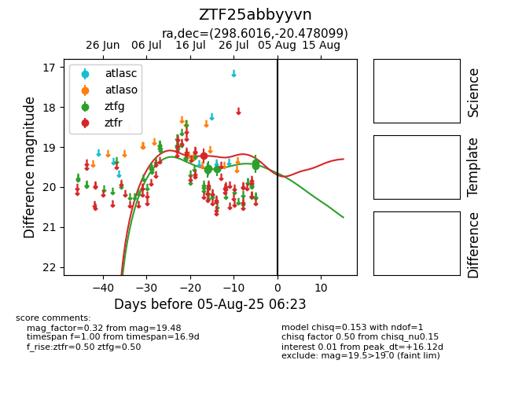

Target ZTF25abbyyvn at 2025-08-05 07:33, see:
FINK: fink-portal.org/ZTF25abbyyvn
Lasair: lasair-ztf.lsst.ac.uk/objects/ZTF25abbyyvn
ALeRCE: alerce.online/object/ZTF25abbyyvn
alt names
ZTF25abbyyvn (ztf,fink)
coordinates:
equatorial (ra, dec) = (298.6016,-20.47810)
galactic (l, b) = (20.7004,-22.68888)
photometry
last ztfg=19.48, ztfr=19.22
5 ztfg, 1 ztfr detections
